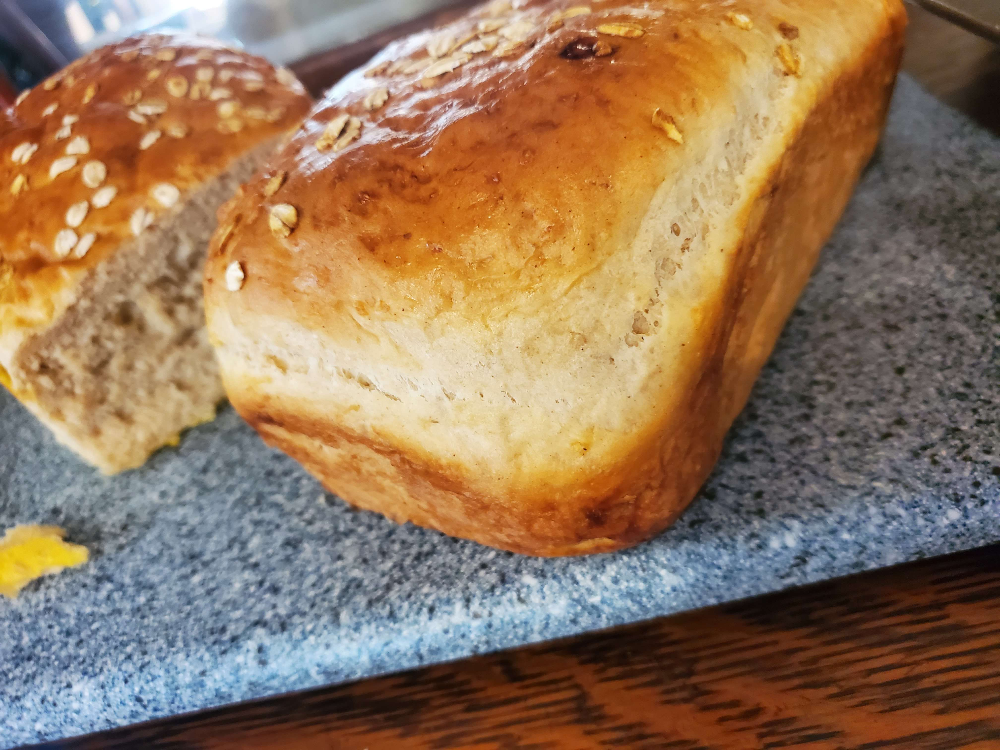
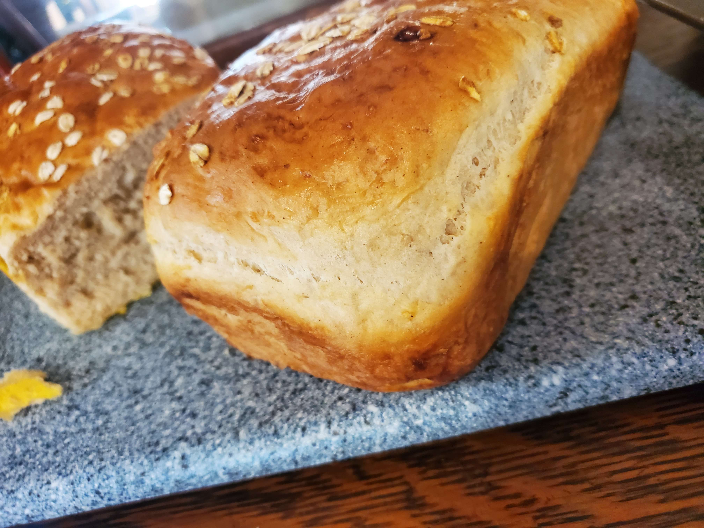

My Recipes
Buttermilk Pancakes or Waffles


This is my favorite pancake and waffle batter. Ive found that you're able to use this same recipe for either pancakes or waffles. My favorite way to enjoy this is with some blueberries in the batter. They are perfect for breakfast and generally pretty quick to make. If you make the waffles you can also enjoy them with some fried chicken to have with your waffles.
Ingredients:
- 2 Cups of AP Flour
- 2 Tablespoons/30g of White Sugar
- 2 Teaspoons of Baking Powder
- 1 Teaspoon of Baking Soda
- 1/2 Teaspoon of Salt
- 2 Cups of Buttermilk
- 1/3 Cup of Melted Butter
- 2 Eggs
- 1 Teaspoon of Vanilla Extract
Instructions
- First take out 2 bowls,one large and one medium. In the medium sized bowl put in your dry ingredients (flour,baking soda, salt, sugar). Then whisk them until combined.
- Second do the same with the wet ingredients (Buttermilk,Melted Butter, Eggs, and Vanilla). And then mix them all thoroughly.
- Pour all of the dry ingredients into your wet ingredients and whisk together lightly until all the flour is mixed in. You want it to be mixed, but make sure not to mix too much. Remember that lumps are ok. Mixing less gives you fluffier pancakes or waffles.
- If you're making waffles, I'd use some pam or something simular to grease up the waffle iron so there isn't sticking. Then simply pour the batter in evenly. Also most waffle irons have a timer set up, but if it doesn't then I suggest to cook it for around 3-5 minutes. A trick is to wait for it to stop steaming though you can do it slighly earlier if you like less done waffles.
- If you're making pancakes I'd start by heating up and greasing the griddle or pan that you're using to a low-medium heat. I'd recommend using a 1/4 cup to pour your pancakes so they are all around the same size. After you pour them in don't touch the pancakes until you see the sides start to pull in and solidify and you see bubbles start to form in the middle of the pancake. Then flip them and wait for about a minute or two or until both sides are golden brown. Flip more if needed.
ButterMilk Replacement

This is something that you can use when either you don't want to buy a whole thing of buttermilk or if you've run out and need something quick. I tend to use this from time to time when I need it. It works better than regular milk, but only almost as good as buttermilk in recipes that need buttermilk. Still a really good and really easy way to get buttermilk fast if you need it.
Ingredients
- 1 Tablespoon Lemon Juice/Vinegar
- 1 Cup of Milk/Cream
Instructions
- So the first thing to do in this recipe is get your cup of milk(or more depending on your recipe) and put it in a small bowl.
- Then simply pour the tablespoon of lemonjuice or vinegar into the milk.
- Then mix the two together lightly and wait for 5-10 minutes.
- After that time you've got your buttermilk replacement and can use it in any recipe that uses buttermilk.
Paul's Famous French Toast
This is one of the first dishes that I've ever cooked because growing up I loved french toast. It still is one of my favorite breakfast dishes for its simplcity and quickness. You can't beat some good old fashioned french toast in the morning.
Ingredients
- Big Slice/Slices of Bread
- 2 Eggs
- Milk
- Cinnamon
- Vanilla Extract
- (Optional) Bacon
Instructions
- Firstly you have to start off with some bread. I recommend a thicker slice as opposed to a smaller one as they tend to have a better texture and I have always enjoyed more. One time I always like to make french toast is the day after I make an oatmeal loaf as that always makes a really good french toast.
- So right after you cut up your bread then you should grab a bowl that's big enough to have your bread lay flat in it. In that bowl you should break your eggs.
- After breaking your eggs you then need to add in your other ingredients(Milk, a good amount of cinnamon, and your vanilla) and then whisk it all together.
- Then I'd grab whatever pan I'm planning to use, any is fine as long as it can fit your bread in it, and start either cooking up a slice or two of bacon or using a a different fat like butter, crisco, or something simular.
- Then when your pan is heated up with whatever fat you're using you dip your toast into your egg mixture for a couple seconds on both sides (making sure to cover every inch of it with thte mixture). Then carefully put your toast into the pan.
- Cook your pan on low-medium heat for a few minutes on both sides or until golden brown and you're all set.
Cinnamon Rolls with Cream Cheese Frosting
This is a recipe that I hold close to my heart. Its something that I make specially for my mom on her special days. Especially Christmas or sometimes on mother's day. I've taken a long time to get this recipe right and so I wanted to share it with all of you so you can enjoy it too.
Cinnamon Rolls Dough and Filling
- 4 Eggs
- 3/4 cup whole milk warmed(100-110F)
- 1/4 cup honey
- 4 Cups All-Purpose Flour(568g)
- 2 1/4 teaspoon instant yeast
- 2 teaspoons of salt
- 10 tablespoons (1 1/4 sticks) of unsalted butter, room temp, cut into 1 inch pieces
Filling
- 1/2 cup brown sugar(99g)
- 1 tablespoon ground cinnamon(extra if you want)
- Pinch of salt
- 2 Tablespoons unsalted butter, melted and cooled
Cream Cheese Icing
- 8 Tablespoons ,1 Stick, of unsalted butter room temp
- 4 ounces cream cheese, room temp
- 1 teaspoon vanilla extract
- 1/4 teaspoon salt
- 1 cup confectioners'(powdered) sugar
Instructions
- In a small bowl combine the eggs, milk and honey.
- If you want to use a stand mixer than in the bowl that goes with that you should put in your flour, yeast, and salt into the bowl. Then using the paddle attachment(if you have it) start to mix together those dry ingredients.
- Then slowly add in your butter one piece at a time until you've added all of them. When its all incorporated and the dough is formed. Then grease a large bowl to let the dough rest in for 30ish minutes. Cover the bowl with plastic wrap or something simular.
- If you don't have the paddle attachment and prefer to do it by hand that works perfectly well too. In fact You can do the same thing with a spoon. Once you've incorperated everything together with the spoon. Then you should kneed the dough until its incorporated and a little smooth. I recommend kneeding for about 5-10 minutes. Just like the other steps you need to let it rest for 30 minutes.
- After the 30 minutes then try to fold the dough over itself. After doing that a few times cover the dough again and let rise. Repeat this process a couple more times for a couple hours.
- After the couple hours then let rest in the fridge overnight. Though make sure that the bowl is securely covered with plastic wrap or something simular.
- The next day take the dough out and kneed it cold for around a minute or two. Then shape it into a ball and cover it with flour and let it come to room temp.
- While its going to room temp mix together all the ingredients for the filling ; brown sugar, cinnamon, salt, and melted butter in a small bowl.
- Then , using a rolling pin, roll the dough into a 16/12 ince rectangle. Using your filling mixture brush it evenly onto the dough making sure to cover it completely. Then starting at the long side start to hand roll it into a log or cylindrical shape. Then punch the seam gently to seal it.
- Then having the dough seal side down start to cut the log into around 12 or so equal pieces using a sharp knife. Then when you're done move the pieces to a greesed pan and place them cut side up. Then cover with plastic wrap and let rise for about an hour. This rise determines the size of the rolls that you get so you can stop it in about a half hour instead if you want smaller rolls.
- After the last resting time then preheat your oven to 350F or 180C and (after removing the platic) putting the rolls into the oven for 27-32 minutes. *Another thing that's optional to do before putting them in the oven is to put a little cream or milk in with the cinnamon rolls before you cook. It can make them even more moist and delicious, but is totally optional.
- While its baking Then you'd make your frosting by combining all of the frosting ingredients together and stirring until smooth and nice looking.
- When you're done baking then let them rest for about 5 minutes, add the frosting, and then you're done. Eat up and enjoy your sweet treat.
Garlic Swirl Rolls

These are something that I've made a few times and are just a twist on the cinnamon rolls but with a savory twist. Still really really tasty and almost like a personal garlic bread roll. Very worth the effort.
Garlic Swirl Rolls Dough
- 4 Eggs
- 3/4 cup whole milk warmed(100-110F)
- 1/4 cup honey
- 4 Cups All-Purpose Flour(568g)
- 2 1/4 teaspoon instant yeast
- 2 teaspoons of salt
- 10 tablespoons (1 1/4 sticks) of unsalted butter, room temp, cut into 1 inch pieces
Filling
- 3-5 cloves of diced garlic (depending on the size and amount you like)
- Herbs(Oregano, Rosemary, Basil) to taste
- 1 teaspoon of salt
- 4 Tablespoons unsalted butter, melted and cooled
- Black Pepper to taste
- This recipe starts off the same as the cinnamon rolls. Check the cinnamon rolls until step 7.
- At step 8 instead of using the filling from those rolls melt some butter, dice up some garlic, and then add the garlic and the herbs and pepper in a bowl and brush it onto the dough that you put into a rectangle.
- Then you continue on with the rest of the steps as normal excluding the frosting and you've got some really tasty garlic rolls.
Paul's Family Oatmeal Bread
 

This is a very special recipe to me. This is something that I grew up with my grandpa making us this on all of the special holidays. I took on this tradition in our house and have been making this on special occasions when we're making large meals too. I've updated the recipe just a bit from my grandpa's, but even to this day I've been following the tradition.
Dough Ingredients
- 2 Cups/500ml Milk
- 1 Cup/89g of Rolled Oats
- 4 Tablespoons/50g of Room Temp Butter
- 1/2 Cup of Honey
- 4 1/2 Teaspoons of Instant Yeast
- 1/2 Cup of Warm Water
- 1 1/2 Teaspoons of Salt
- 2 1/2 Cups of Bread Flour
- 2 1/4-3 Cups of All Purpose Flour
Topping
- 1 Egg
- 1 Tablespoon/14ml of Cold Water
- 1-2 Tablespoons/6-12g of Rolled Oats
Instructions
- First you need to heat your milk to a simmer on your stovetop. While this is going on add your oats and butter into a medium bowl or in a stand mixer and mix it together and add in your milk by pouring it on top. After it's combined set the mixture aside for about 30 minutes to an hour, or until the mixture is room temperature.
- After the mixture is at room temperature then add in your honey, warm water, yeast, and salt. Stir until combined and add the Bread Flour. After the Bread Flour is added in and combined with everything slowly add in your All-Purpose Flour until the dough begins to pull away from the sides of the bowl. Make sure to not add too much flour, you want the dough to be soft and a little sticky.
- Kneed the dough for a few minutes until smooth and elastic and make sure to scrape the sides of the bowl to get all the dough.
- Transfer the dough to a greased bowl and cover the bowl with a dish towl or plastic wrap until it is doubled in size, or about an hour.
- When you feel the dough is about doubled in size then take the dough and punch it so it deflates. Then cut the dough into two loaf shaped balls. Then put the two loafs into two seaparate greased loaf pans so the dough doesn't stick too much.
- Then you'd want to make some quick egg wash. To make the egg wash what you'd have to do is beat an egg into 1 tablespoon of cold water. When you feel it is mixed thoroughly then brush it onto the two loaves.
- Then sprinkle some of the oats on the top to make the topping look nice and and for some texture. Cover it with plastic wrap and let sit for about 30-45 minutes.
- Then take the plastic wrap off and preheat the oven to 350F/175C and bake for about 30-40 minutes. When its golden brown sometime within that time then you're all set. Let it cool down for 20 minutes and then take them out of the pans. Then let it cool down the rest of the way on a cooling rack for a while. If you're planning on leaving it out for a while cover it with a towel to preserve it a little.
Great Grandma's Clover Rolls
These Clover Rolls are Rolls that have been in my dad's family for actual generations. When my dad was growing up she used to bake these rolls with dinner and they were a family favorite. My great grandmother was never good about writing the whole recipe down so my aunt has been working on recreating the recipe for years now. A year or two ago I finally got her to share the recipe with me. Now I want to share it with all of my friends and the rest of my family and whoever else finds it.
Dough Ingredients
- 2 Cups of Milk
- 2 Tablespoons of White Sugar
- 4-5 Cups of Flour
- 1 Teaspoon of Salt
- 1/4 Cup of Shortening
- 4 1/2 Teaspoons of Yeast
Topping
- 4 Tablespoons of Butter
- 1/2 Cup of Brown Sugar
- Crushed up Pecans
Instructions
- So first you want to heat up your milk in a saucepan and scald it. Stir frequently and take it off the heat when you start to see any bubbles forming. Take a half cup of the hot milk out and put it aside in a separate bowl to cool down. While that milk is cooling down till lukewarm get a large bowl and put the rest of the milk, shortening, sugar, and salt in it.
- When the milk is lukewarm then add in the yeast to it and slowly stir until combined. Add 2 Cups of Flour and the yeast mixture and let rise until there is bubbles. Add flour until the dough can be handled (about 4 cups) and knead the dough until its elastic. Let the dough rise until about tripled in size.
- Knead the dough again and then place it on a floured surface and start to cut the dough into little pieces and shape them into circles about the size of large marbles.
- Brush the dough with butter and stick 3 of the dough pieces together. I suggest using a muffin tin to make it so they all stick together. If you're going for a plain roll then I suggest just brushing a little butter on it put them in the oven at 425F/215C for 15-20 minutes. If you want a topping then look at the next step for how to do that.(make sure you do that before you put them in the oven.)
- If you want a topping on them I suggest a pecan topping. It's the preferred topping for our family for a reason. If you're planning on adding the topping you start off by crushing up some pecans and melting up your 4 tablespoons of butter. Then you mix that butter with your 1/2 cup of brown sugar. Then you can add some of the topping at the bottom of the muffin tin either right before you start baking them or after 5 minutes in.
Brown Butter Chocolate Chip Pan Cookie

This is a take on my sister Nicole's Brown Butter Chocolate Chip cookies that I did a couple times for desert on a family dinner night. Instead of a whole bunch of cookies I made one giant one in my cast iron skillet. It's totally worth it if you have one and are having a party or a family dinner. It's an easy desert that's fun and very tasty.
Ingredients
- 1 Cup/227g of Unsalted Butter
- 2 Cups/250g All Purpose Flour
- 1 Teaspoon Baking Soda
- 3/4 Teaspoon Salt
- 1 Cup/215g of Dark Brown Sugar
- 1 1/3 Cup/73g White Sugar
- 2 Eggs
- 2 Teaspoons of Vanilla Extract
- 3 Cups of Dark and Semi Sweet Chocolate Chips Mixed
Instructions
Marinara Sauce

This is a recipe that I learned from my Dad. I've worked on it over the years and feel I've made a few adjustments and made it my own. It's a simple, but time consuming recipe that you sort of keep simmering in the background while you're cooking other things. You definately want this to cook for a while so keep that in mind. This version will be very versitile so that you can use it on anything that you like marinara sauce on. From pizza to pasta it should work for what you want. Also you should be using this as more of a base than like a final end all be all sauce. Marinara is really done to someone's liking and you can edit it as you see fit. You can make it spicy, or add some alcohol, or add different vegetables if you'd like.
Ingredients
- 2 Cans of San Marizano Tomatoes
- 1-2 Onions
- 1 Large Carrot
- 1-2 Celery Sticks
- 3 Cloves of Garlic
- 1-2 Tablesspoons/15-30ml of Soy Sauce
- 1-2 Tablespoons of Worcestershire Sauce
- 1 Tablespoon/15g of White Sugar
- 1 Tablespoon of Dijon Mustard
- Rosemary(Fresh or Dried)
- Oregano
- Basil
- 1 Bay Leaf
Instructions
- First you want to start off with the holy trinity of tomato sauce. Start by very thinly cutting up your celery and carrots. I suggest to keep your onions a little thicker because I like onions but that's up to you. After you've prepped those then stick them in a large pot with some olive oil on a low-medium heat for 10-15 minutes stirring occasionally. After that add in some minced up garlic and let that simmer for about 5-10 minutes. (If you want to add in some other veggies then this would be the time for that. Other veggies that I'd suggest adding is mushrooms, zucchini, and maybe some roasted garlic.)
- Once you got your vegetables simmered then you should open up your cans of tomatoes, whether it be the San Marizanos or another type, and pour them into the large pot. From here on out I'd say a lot of the messurements are more optional rather than required. Though I think I set a good benchmark of what would work in a sauce.
- Once you've simmered your tomatoes you should start trying to crush them with either a spoon or a pulverizer or something depending on how chunky you like yoru sauce. Then crush each tomato till you have a bit less chunks.
- Now you should start adding in some of the other ingredients to slowly change the taste to how you like. I suggest adding in the rosemary, oregano, and the bay leaf early on to add that flavor into your sauce and really incorporate them.
- After a few minutes then you should add in the rest of your Worcestershire and Soy Sauce, Dijon mustard, and your sugar. Of course add in salt and black pepper to taste as well.
- Now you'll want to have the sauce simmer on really low and taste it occasionally over the time that you're cooking it to add more ingredients if necessary. This might be hard the first time that you're doing this, but will for sure get easier and easier every time you make the recipe.
- You'll want to cook this for around 2-4 hours on a low heat and have it slowly incorperate all of the flavors you're adding.
- When it's all done then make sure to take out the bay leaf and then you'll be able to use it on whatever you want to use your new very tastey sauce on.